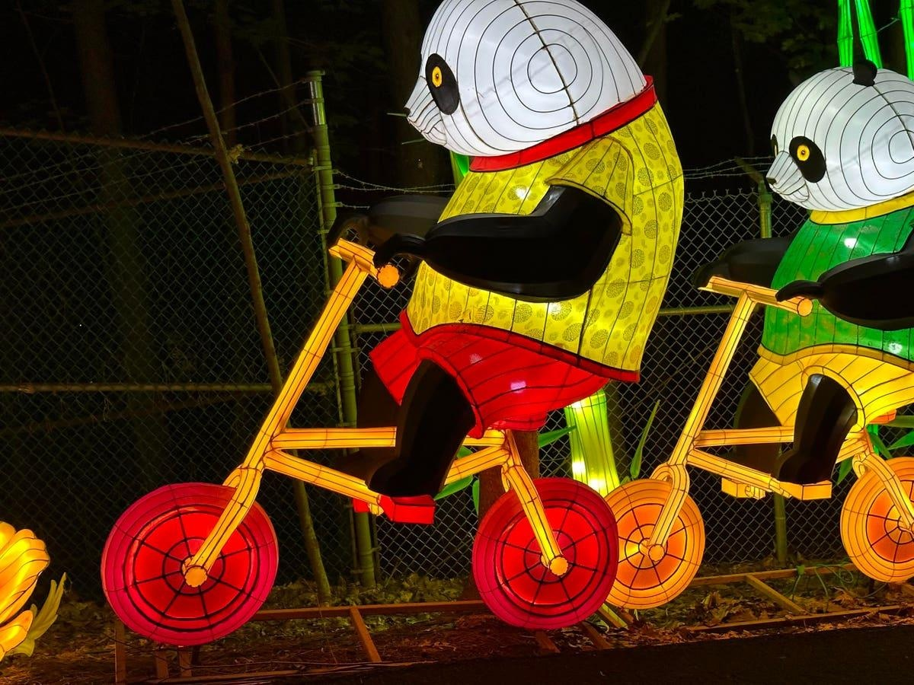

Lantern Festival Illuminates The Binghamton Night(This is the 13th story by this journalist in a series revealing “Hidden America” — worthy travel destinations unknown by most Americans.) Heading to a small zoo in Binghamton, New York, is probably not on many out-of-town travelers’ itineraries. Maybe it should be. The second annual Lantern Festival at Ross Park Zoo is, pardon the pun, quite illuminating, or, better yet, quite a spectacle. It’s a nighttime spectacle perfect for families with young children or for grandparents bringing the grandkids. But, with the kid in all of us, you don’t need to bring children to enjoy 40-plus neon lantern sculptures playfully positioned throughout the zoo. The lantern sculptures are a mix of lovable animals, scary creepy crawlers and ferocious dinosaurs. Some have movement, and their colors are brilliant and varied. The zoo’s natural setting, tucked into the northern face of Binghamton’s South Mountain, adds to the display, as colored lights illuminate rock faces and trees. “The lush surroundings and scenic beauty create a captivating environment for the lanterns to stand out, adding to the enchanting atmosphere of the event,” says Evelyn Hale, the zoo’s director of visitor experience. “The darkness of the wooded area further accentuates the brilliance of the lantern displays, creating a magical ambiance that immerses visitors in the lantern festival's wonder.” It took about three weeks to set up the lantern sculptures. The work was done by Tianyu Arts and Culture, a company specializing in lantern festivals and art installations. The three-week setup “ensured that each lantern was meticulously placed, and the entire display was ready for the event,” Hale says. During the setup, there were several technical difficulties that posed challenges. “One of the main challenges was the limited availability of outlets and power sources along the zoo path,” Hale recalls. “Additionally, the varied terrain of the zoo grounds required careful planning and adjustments to ensure the lanterns were securely installed. Coordinating the setup schedules with the zoo's daytime operations and accommodating large work vehicles further added to the complexity of the task.” Lantern festivals, Hale says, are becoming increasingly popular at U.S. zoos. The festival at the Ross Park Zoo attracted 17,000 visitors last year and runs through Oct. 29 this year. The admission charge is $20 for adults and $15 for children ages 3-12. The animals at the Binghamton zoo are in darkness and cannot be seen by nighttime visitors to the lantern festival. Are there concerns about the lanterns' effects on the animals? “Ensuring the well-being of our animals is of utmost importance,” Hale says. “To address concerns about the lanterns' effects on the animals, we provided blinds to create shaded areas and reduce direct light exposure during nighttime hours. Additionally, our staff actively educates visitors about the animals' need for rest and the importance of minimizing disturbances during their natural resting periods.” The Binghamton zoo opened in 1875 and is “the fifth-oldest zoological institution in the country behind such communities as Philadelphia, Chicago, Cincinnati and Buffalo,” according to the zoo’s website. The zoo says it “is dedicated to promoting awareness and stewardship of our natural world, in our community and globally, through education, conservation and community engagement.” |
 |